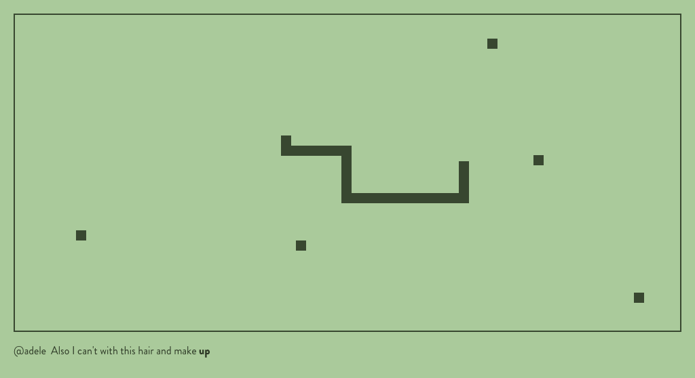
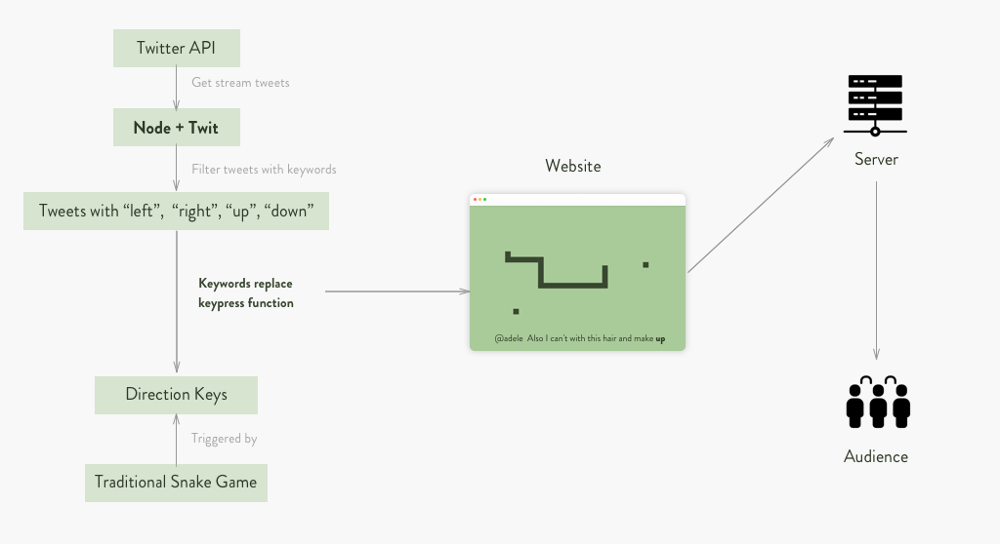
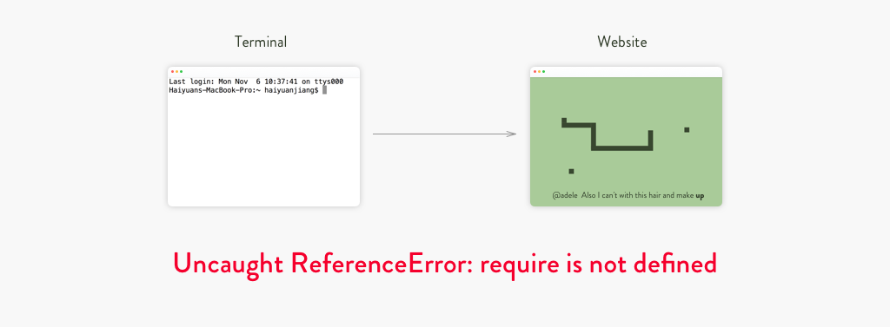
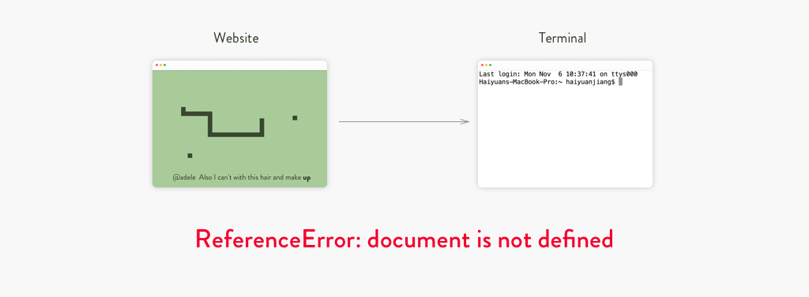

Create a system that uses a live feed of data. Make that external data feed functional in a way the original source didn’t expect.
After sharing data cards and brainstorming ideas，I decided to redesign the traditional snake game using Twitter tweets as controllers. So when someone posts a tweet including any of the directon words, "up" "down" "left" "right", the snake will move accordingly.
I did research on how to code the snake game and how to use Twitter API, both of which turned out could be written in JaveScript, also I'm more familiar with the web platform, so I decided to design a website for my game.
The snake game is running with no problem:
Node.js successfully filtered all the streaming tweets with direction keywords:
When I tried to combine the two pieces to have them work together, errors occured:
 